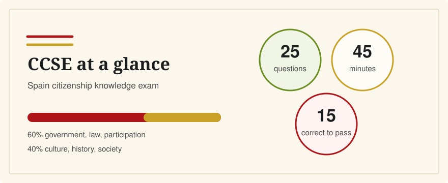

What Is the CCSE Exam?
Last verified: June 5, 2026
The CCSE is the Spanish citizenship knowledge exam. It tests basic knowledge of Spain's Constitution, institutions, geography, culture, history, and everyday society.

For many adults applying for Spanish nationality by residence, the CCSE is one of the required Instituto Cervantes exams. It has 25 questions, lasts 45 minutes, is written in Spanish, and is passed with 15 correct answers. CCSE English helps you study the official material with Spanish and English side by side, but it is independent and not official.
What CCSE Means
CCSE stands for Conocimientos Constitucionales y Socioculturales de España: constitutional and sociocultural knowledge of Spain. The exam is designed and administered by Instituto Cervantes. In the nationality context, it is used to show that an applicant understands basic civic and social knowledge about Spain.
Who Usually Needs It
Instituto Cervantes explains that, in certain Spanish nationality cases, applicants may need two tests: the CCSE knowledge test and the DELE A2 or higher Spanish-language diploma. Exemptions and dispensations can depend on age, legal capacity, education, literacy, disability, nationality, and the exact route to nationality, so check the Ministry of Justice nationality guidance and official Instituto Cervantes guidance for your case.
This page is general study information, not legal advice. If your case is unusual, time-sensitive, or legally complex, use official sources or speak with a qualified immigration or nationality professional.
What the Exam Looks Like
As verified on June 5, 2026, the ordinary CCSE exam has 25 questions across five tasks and lasts 45 minutes. The official CCSE format page explains that questions are multiple choice or true/false. Correct answers receive 1 point, incorrect and blank answers receive 0 points, and there is no penalty for guessing.
The official structure is weighted toward civic knowledge: government, legislation, and citizen participation account for 60% of the questions; culture, history, and Spanish society account for 40%.
The Exam Is in Spanish
The official CCSE exam text is written in contemporary peninsular Spanish. That matters for English speakers: translations are useful for learning, but the real exam will not be in English. A good study routine should keep the Spanish visible while using English to explain meaning, context, and confusing vocabulary.
How CCSE English Fits
CCSE English is an independent bilingual study tool. It is built for English-speaking residents in Spain who want to understand the official questions instead of memorizing answer letters. It is not affiliated with Instituto Cervantes or the Government of Spain, and it does not replace Instituto Cervantes registration, official materials, or Ministry of Justice guidance.
Related Guides
- How many questions can I miss on the CCSE?
- Do I need Spanish to pass the CCSE?
- CCSE vs DELE: what's the difference?
- Where CCSE fits in the Spanish citizenship timeline
Sources
- Instituto Cervantes: Spanish nationality exam overview
- Instituto Cervantes: How the CCSE exam works
- Instituto Cervantes: CCSE frequently asked questions
- Ministry of Justice: Spanish nationality by residence
Practice the Spanish questions with English translations and explanations, so the official material becomes understandable rather than just familiar.